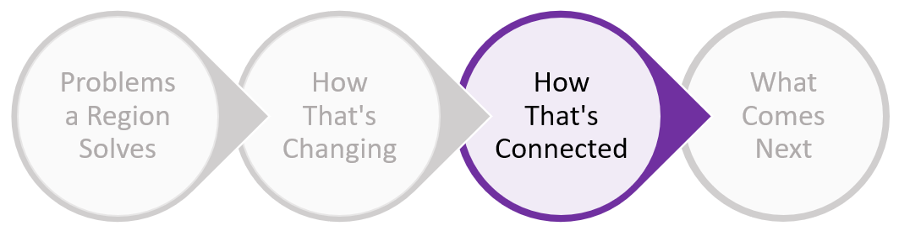

3) How the industries are connected

The network map below takes the circles from Step 1 and spreads them out on a network map based on their similarity to
each other. More similar industries are closer, and connections reflect a strong relationship between industries. All
nodes/circles are sized based upon number of employees, but nodes with a Relative Size less than 0.5 are colored gray,
so that we can focus on the industries with more activity that define a region. Using this network map, we can see
which new industries are reasonable targets, and create strategies to expand from existing activities to new ones.
Click Here To See More Instructions
You can zoom into parts of the map by clicking the zoom icons. You can click on nodes to see their connections, and to
see other data such as number of employees, average salary, and growth trends for the industry. You can also toggle
between the "Local View", which only lights up nodes with Relative Size greater than 0.5 and scales the nodes using
local employment numbers, and the "National View", which lights up all nodes and scales the nodes using national employment
numbers.
Because this graph attempts to visualize a 675-dimension matrix in 2 dimensions, some of the industries might seem
closer or further from "similar" industries than they should. Nevertheless, by only looking at the data from above,
we see industries group into clusters. Of note, I do not color-code by cluster. Once we group clusters into networks,
the clusters become less relevant. Instead, I used 9 colors that the human eye can easily identify and linked them
to the 9 single-digit NAICS categories.
Finally, this graph combines all four factors to determine similarity (employment, establishments, occupation composition,
and inputs/outputs). We can adjust the graph to determine similarity by only one factor, or by a different combination
of factors.
How
's industries are connected to each other
A network map that positions industries and clusters based on their similarity
National
Austin
Tupelo
Detroit